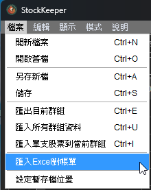
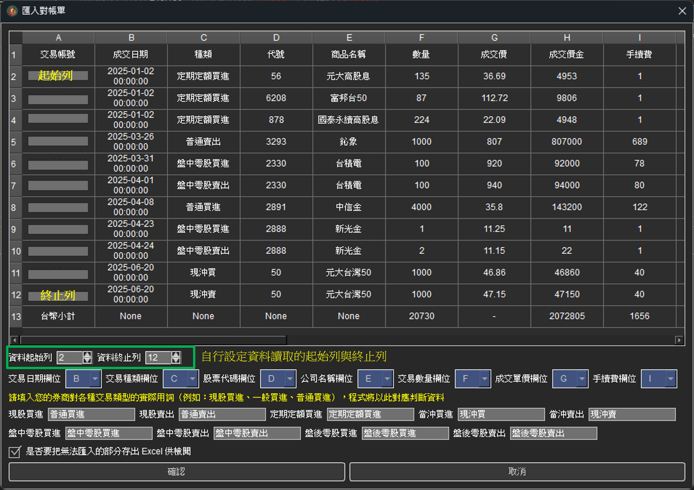
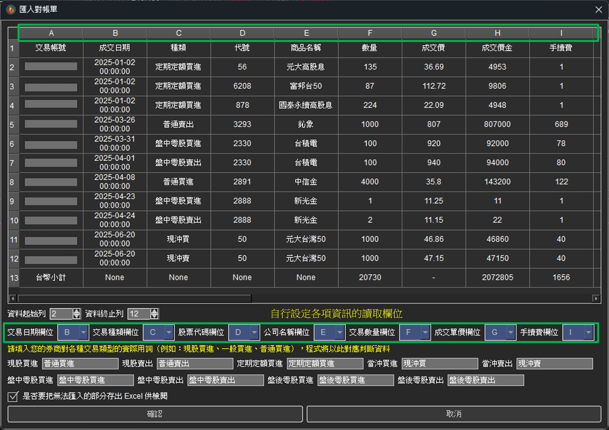
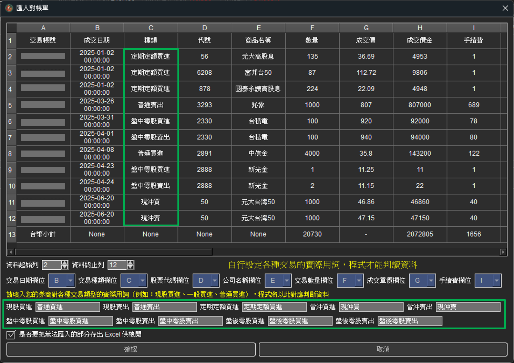
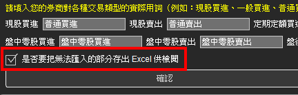
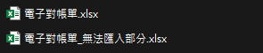

如何匯入Excel對帳單
步驟一：選擇匯入對帳單功能
點選工具列的「檔案」並選擇「匯入Excel對帳單」：
備註：只能載入 (.xlsx) 的檔案格式，無法支援舊版的Excel檔案 (.xls) 及 (.csv) 檔案
步驟二：依序設定匯入對帳單的對應欄位
選取對帳單之後會跳出一個對話框，程式會先將整個對帳單的所有內容讀進程式裡，使用者要依序設定所要讀取的欄位。
1. 設定讀取檔案的起始列以及終止列。
2. 設定讀取檔案的各項對應欄位，包含『交易日期』『交易種類』『股票代碼』『公司名稱』『交易數量』『成交單價』及『手續費』。
3. 設定各種交易類型的實際用詞，例如一般買進股票在各家劵商也許會使用不同的名稱像「普通買進」「現股買進」「一般買進」等，為了讓程式可以順利判讀資料，需要自行設定這些交易在您的對帳單裡是使用什麼名詞。
接著就可以按下確定囉!
貼心功能
StockKeeper 還有個貼心的小功能，可以把程式無法判讀的部分輸出成Excel檔，提供使用者決定是否要手動新增這些未被匯入的交易紀錄。
 另外這些設定參數都會被記錄下來，方便下次使用喔!
如果遇到任何問題，請參考聯絡我們。